No Drupal.
aka Looking Outside the Drupal Lens.
aka Breaking the Drupal Mold.
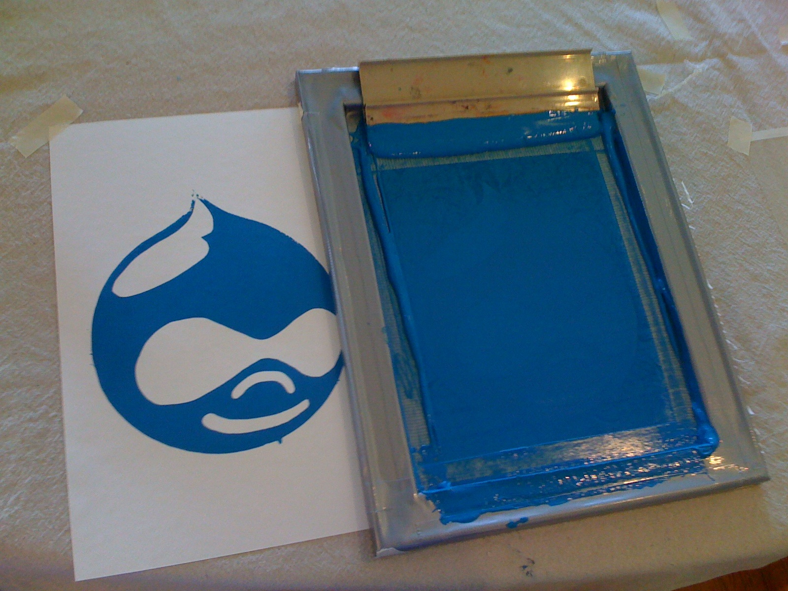
aka Saying "No" to Drupal.
aka Picking Drupal Last.
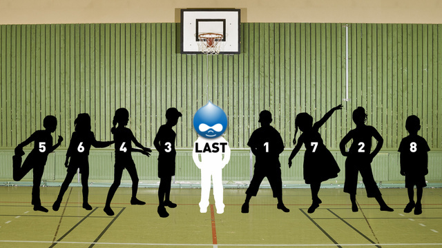
aka Stop seeing nails.
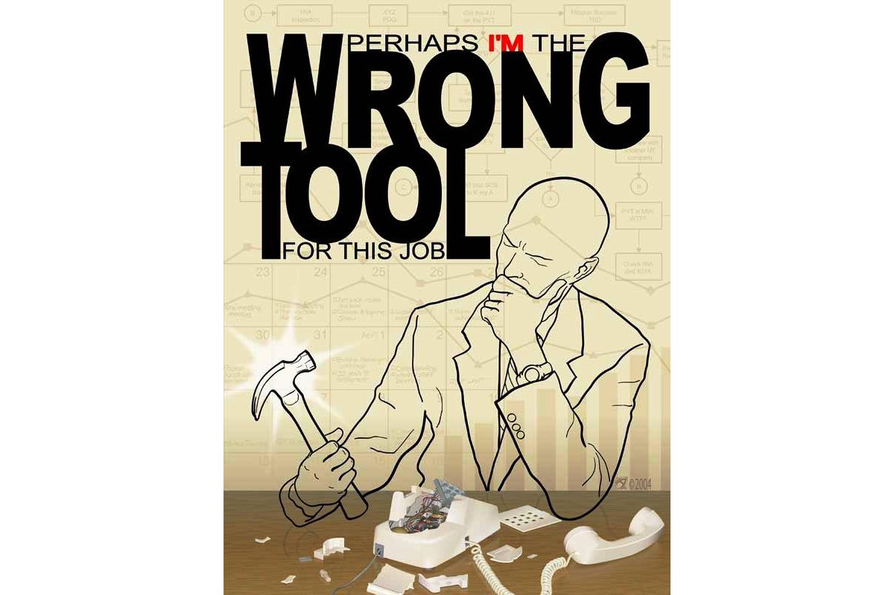
aka Hacking Core.
Wait. Not that last one.
How dare you!?!?
I say this all with love.
Wait, who are you?
Spent about 6 years focused on Drupal.
Main developer on OpenLayers module.
Helped a lot with "CVS" applications.
Spoke at DrupalCons in Paris, Copenhagen, Chicago.
Organized sprints, user groups, and camps.
Worked for Drupal shops.
Moved to Switzerland because of Drupal.
I drank the Drupal Kool-aid.
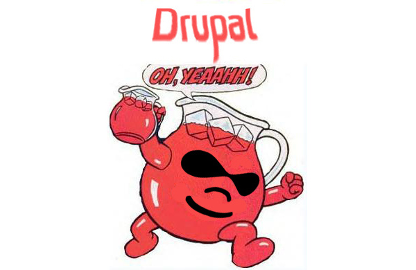
and asked for more.
In short, I know and love Drupal.
Why the change of heart?
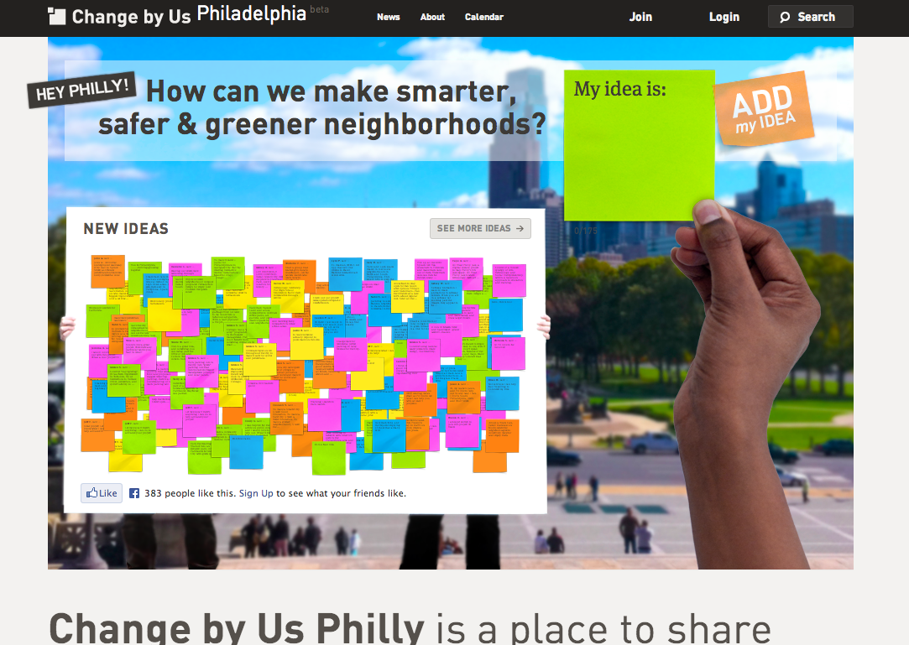Change By Us
Team of 10.
2 Drupallers.
"We can build this in Drupal."
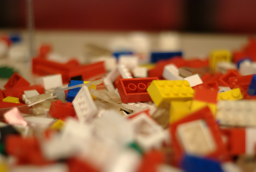
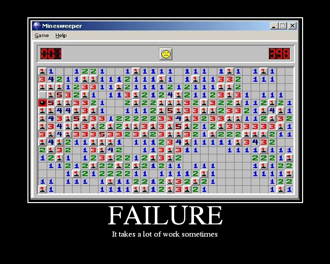
Drupal seems fairly simple on the surface.
Nodes, Taxonomies, Menus.
But in production....
Views, Features, Dev/Staging, Varnish, etc.
Pro-tip: Don't prototype with Drupal without years of experience.
Fail: Drupal is hard.
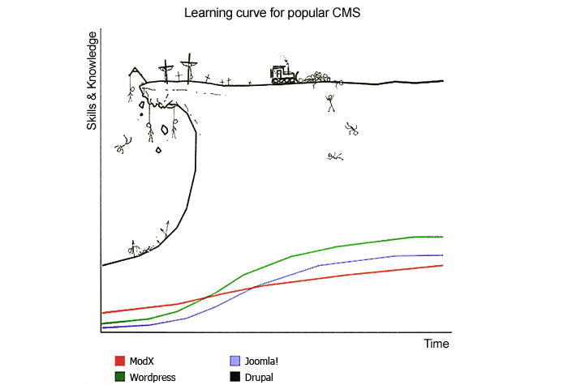
Took me years to feel comfortable with Drupal.
And just a year away, I feel pretty in the dark.
Drupal 8 includes more 3rd party code, but those are still parts to learn.
It's not about training more folks, its about making Drupal simpler.
Drupal 9: no new features, just rip out code.
It's not about more documentation, its about less, more concise documentation.
Fail: Where to start with Drupal.
Getting started with Drupal is for who exactly?
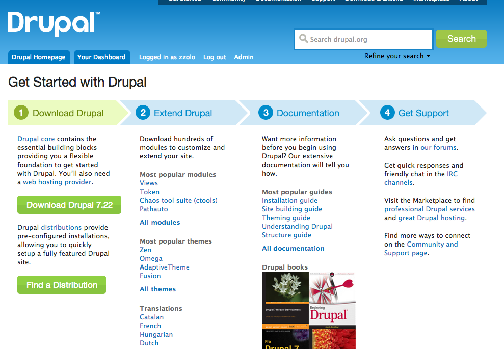
Different audiences.
Non-technical, developers, sys-admins.
There should be a getting started from the command line.
$ brew install drush
$ drush dl drupal
(edit settings.php)
$ drush site-install
$ drush runserver
Oh right, I have to spend years getting to know Drupal before I can be confident making a module.
Back to the story.
"Engagement Toolkit" was not all sunshine and puppies after not using Drupal.
Lots of fun and experimentation at Code for America.
Node, Python, Ruby.
Now I Code in a Newsroom.
I make the news more exciting.
Lots of JS and client-side fun.
We use Drupal.
For content management.
Not for the interactive things I work on.
We tried Drupal once...
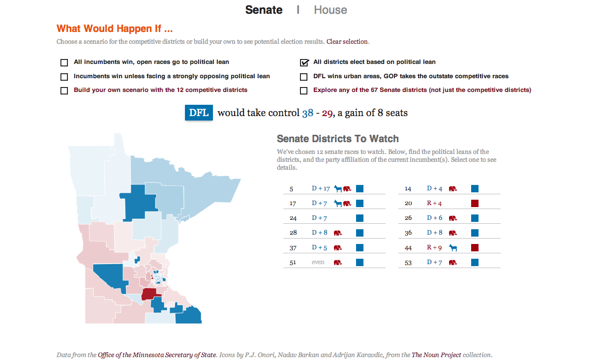
Every candidate for every position in MN for the 2012 general elections.
Districts has Races has Candidates.
Images.
Save votes.
What went wrong (with Drupal)?
Fail: External API (RESTfullness)
Drupal 8 will see some great improvements here, but not all the answers
Our final interactive pieces were going to be all front-end.
We needed some REST.
Read with Views Datasources.
Saving votes with Services or custom module.
The Drupal Data Model
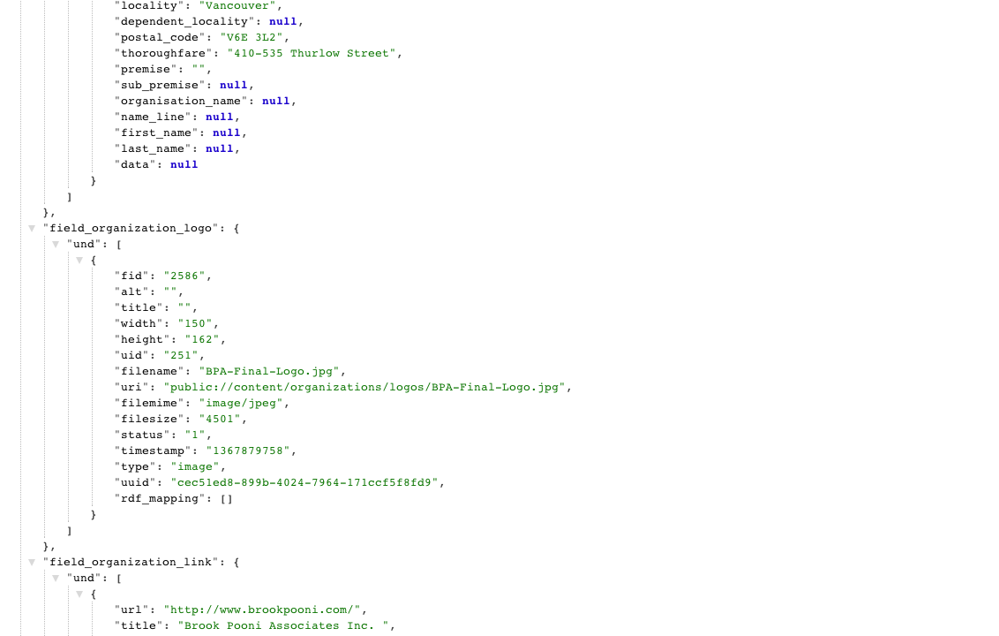
Does an API without documentation get used?
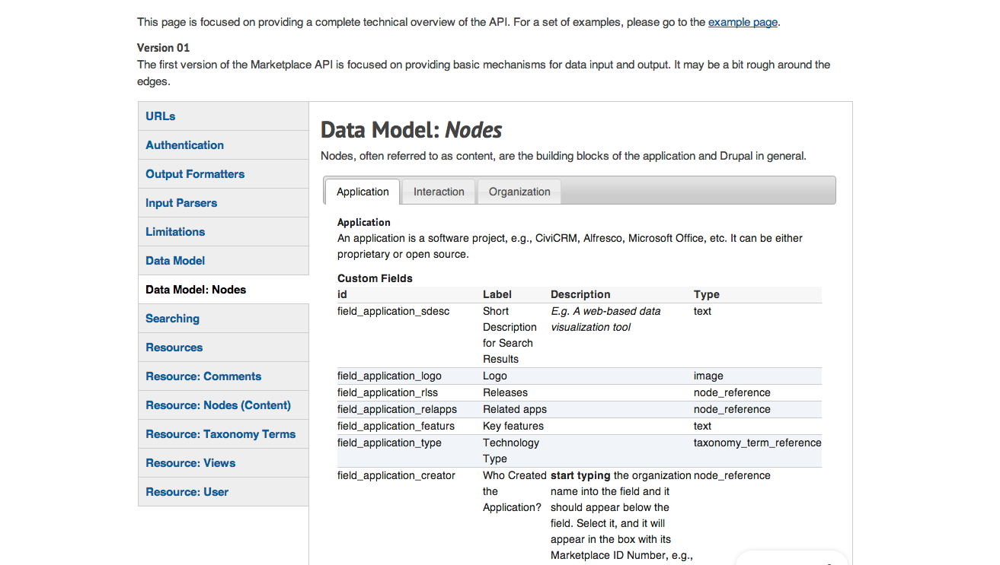
3 weeks
Pro-tip: Don't use Drupal as a "Backend".
Pro-tip: Don't use Drupal if you are not managing content.
Sure, we were easily able to edit the content.
Content management != content editing
Lots of overhead for a WYSIWYG.
We did not really manage the content past a month.
So, now we have to rip everything out of Drupal.
Interface driven
Themers, Developers, and Site Builders, oh my.
Site Builders?
Drupal is so large and complex it has Site Builders?
Developers spent lots of time allowing for other people to do their work.
This is actually pretty cool.
Site building is as complex as coding modules.
How much of site building is done pre-launch?
Is all that interface really needed?
Complicated
Abstraction everywhere!
Years of investment.
Pro-tip: Don't use Drupal unless you are an expert or have time to become one.

Elephant
The elephants are coming!
They're here!
In fact, they're here and they kind of wrecked up the place.
Drupal used to be a great option for small websites.
Now it is too complicated and resource-intensive.
Drupal is a serious investment.
Pro-tip: Don't use Drupal for small sites.
Drupal is the elephant now!
Pro-tip: Content Management != Enterprise.
"We can build that in Drupal."
Pro-tip: Don't use Drupal for a blog.
It's like using Microsoft Word to send an email.
Tumblr, Wordpress, Jekyll, and many more.
Pro-tip: Drupal is really opinionated.
Abstract and customizable, sure, but out of the box is very opinionated.
Pro-tip: Content != Data.
It's a thin line.
Other tools.
Content Management Framework vs. Content Management System.
Wordpress.
Web Application Framework.
Ruby on Rails, Django, CodeIgniter, Symfony.
Web Framework (serve HTTP).
Flask, Sinatra, Express.
What not to build in Drupal.
Blog.
Brochure site.
Anything that has less than "10 pages".
An site that has no content managers.
An API.
Twitter, Foursquare, Facebook, Flickr
(Basically any service you use on a daily basis.)
E-trade.
Games.
Geospatial applications.